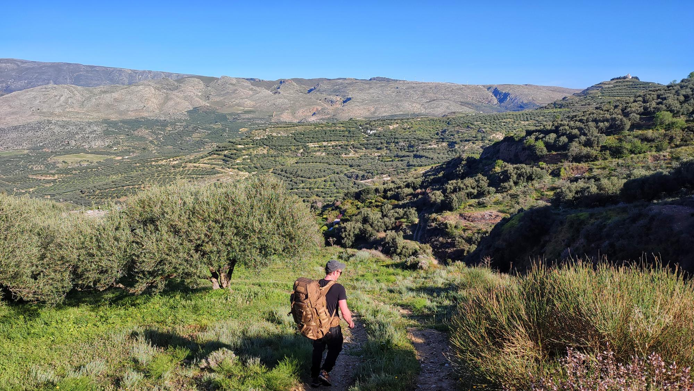

Bivvying the E4
Me and one of my best mates, Daf, hiked 250km across the Greek island of Crete, following the E4 trail.

We carried:
- hiking boots
- spare shoes for camp / town
- spare clothes (not too many, hand-washing throughout)
- sunhat + sunglasses + sunscreen
- toiletries
- first aid kit with blister plasters
- a shovel, toilet roll, hand sanitiser, and a lighter to burn used tissues
- a sleeping bag
- sleeping mat
- hiking poles
- phone charger + powerbank + headtorch
- a pack of cards
Fully packed our rucksacks weighed 14kg.
We were conscious of how hilly the route is, and how heavy our packs already were without food and water. Tents are heavy, and also after hiking 10 hours over mountains carrying a full pack in the sun, crawling into a coffin-sized compartment and sleeping within breathing distance of Daf’s unshowered form wasn’t the most promising of horizons.
Instead of taking a tent, we took bivvy bags.
A bivvy bag is a waterproof lining for your sleeping bag. The larger models are big enough to fit sleeping mats inside, and everything can be contained, waterproofed, and made cosy. Bivvy bags are small and light, quick to setup, and mean that it’s possible to sleep anywhere, often unnoticed.
We knew that accommodation would be possible on Crete, although not consistently, and on our first full day of hiking we were unable to find a place to stay. We arrived at a village canteen, and after eating dinner under darkening skies the owner saw our packs and gestured to us, where would we stay? We pointed to some nearby fields and she shook her head and pointed to a set of stairs beside her restaurant. I was unsure where the stairs led - to an upstairs room? - but regardless we were extremely thankful for her kindness. The stairs led to the roof of the restaurant, which was flat and away from the village dogs. This is where we slept and it felt like a huge win.